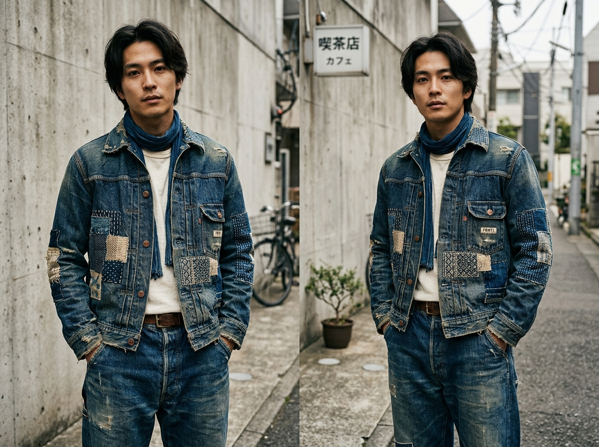
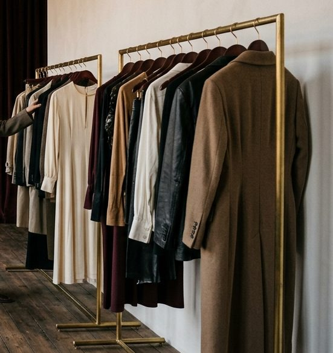

Släpp 04 · 5–6 dec · Bokning öppnar snart
Japanese Vintage
Indigo, sashiko och hantverk från Tokyo.
Stilen
Indigo, sashiko och hantverk från Tokyo.
Selvedge-denim, lagade boro-jackor med synliga stygn, arbetsplagg och avskalade siluetter från japanska arkiv. Plagg där varje lagning berättar en historia.
IndigoSashiko-stygnBoroSelvedgeWabi-sabi
Det här väntar dig
- Plagg
- Selvedge-denim, boro, sashiko, workwear
- Epok
- 1970–2010
- Märken du kan hitta
- Kapital, Evisu, Issey Miyake, Visvim
- Prisnivå per plagg
- 400–4 500 kr
japanese
Släpp 04


5–6 dec
Göteborg · hemlig plats
Välj din tid
Boka Japanese Vintage
Laddar lediga tider …